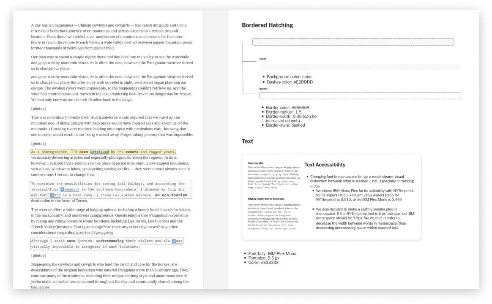
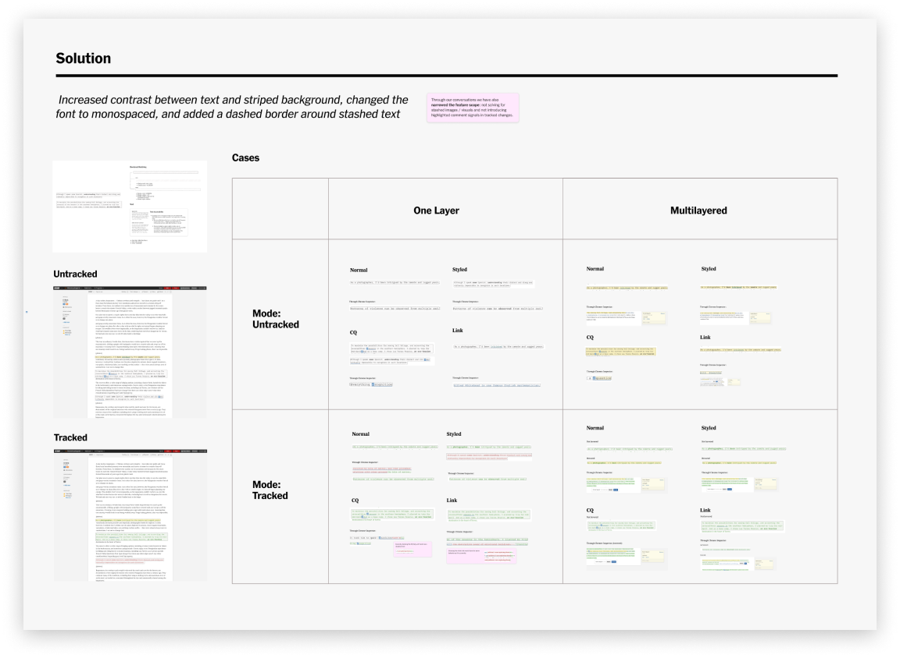
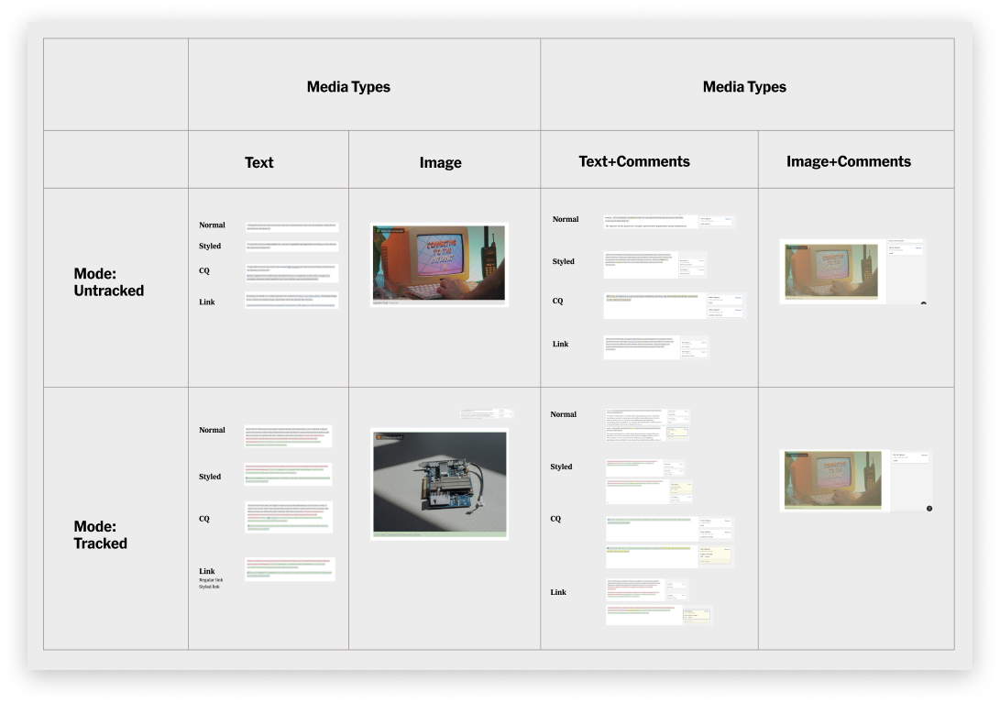
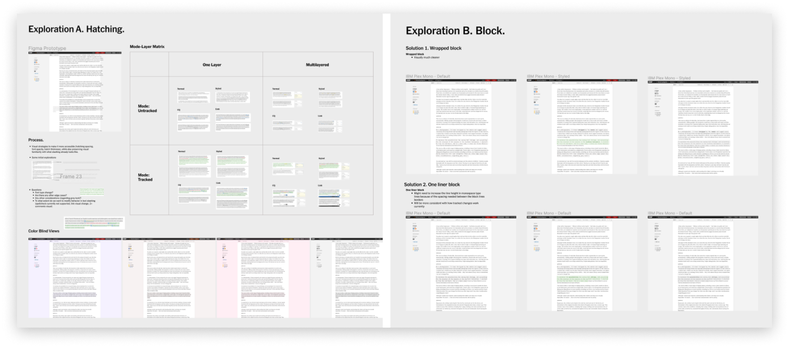

Stashed Text in Oak
Oak is the main text-editor and one of the most essential tools used by the world’s largest and most influential newsroom. Every journalist and editor have crossed their path with this tool. Whether they are writing investigative pieces, editing interactive graphics, or collaborating with each other — Oak has become the medium of ideas and critical truths, connecting journalism and millions of readers worldwide.

Context
Since the conception of the tool, Publishing Tools team has been working on many cool custom features. I worked on a feature called stashing that lets a reporter or editor hide text during collaboration. It’s a way for newsroom to leave a note in the body without it getting published.
Text shashing in both tracked and untracked modes was inaccessible. It had a very low level contrast. This especially impacted color blinded journalists / editors. We also wanted to make sure the new styling didn't conflict with all the other text states, like tracked changes and spelling/grammar error highlights.
Solution
Throughout the process I have considered typeface choices based on x-height and aspect ratio, so that the solution would be compatible with current uses of fonts. It was also interesting to discover that old stash implementation confused editors as it was not clear if there was a double space between words or one space, and sometimes minor errors would be published. We had to prevent that confusion, which is why we pushed for a bordered blocks solution. We also decided to use monospace as it allowed to be visually distinct from other fonts used for normal writing or contextual blocks / explainer modules.
Process
I started gathering information about different use cases of stashing text. Some editors would use the feature to clarify some details or ask for further evidence of the claim in an article. Some journalists would stash text to remove unnecessary parts, or in many cases, preserve the information for future references / other article pieces. I came up with matrix-layered approach to understand current stashing and address different edge cases and variations on how stashing can appear in one's workflow.
We explored numerous visual strategies on how to improve stashing accessibility. From changing background color-contrast and typographic changes to more bold changes like "code-blocks." Since we had a timeline for the feature, I crafted two main solutions: Hatching and Note Blocks.
Reflections
Historically text editors were never designed with collaboration in mind, but working on the feature helped me to think more about collaborative editing and how to mediate it fluidly in software. Thought I can't share much more details of the project, it was also one of the fewest projects, where I've got to work closer with typography and different visual strategies in product design. Moreover, I personally learned a lot about behind-the-scenes of not only technical aspects of text-editing, but also journalistic practices and workflows specific to the Times.